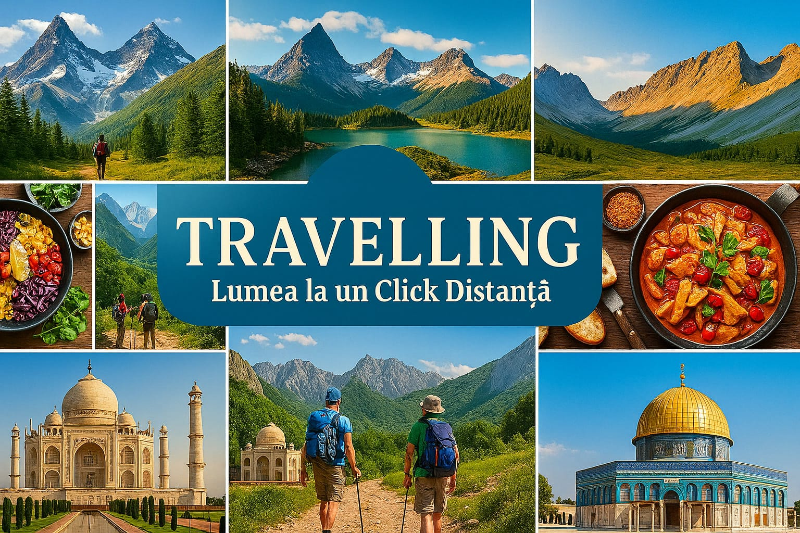

Bun venit în lumea călătoriilor!
Călătoriile sunt o oportunitate unică de a descoperi locuri noi, culturi diferite și de a crea amintiri de neuitat. Acest site este ghidul tău în lumea fascinantă a explorării. Fie că ești un aventurier pasionat de munți și păduri, un gurmand în căutarea celor mai delicioase preparate sau un iubitor de cultură și istorie, aici vei găsi informații utile, idei de destinații și sfaturi pentru o experiență de neuitat. Lumea la un click distanță este mai mult decât un site de călătorii – este o sursă de inspirație. Împărtășim povești reale, fotografii spectaculoase și recomandări testate, toate pentru a-ți face planificarea călătoriilor mai ușoară și mai plăcută. De la orașe cosmopolite și plaje exotice, la sate pitorești și rute montane, ai ocazia să explorezi fiecare colț al planetei din confortul casei tale. Nu trebuie decât să alegi destinația și să te lași purtat într-o aventură digitală care îți va deschide apetitul pentru explorare. Descoperă paginile site-ului nostru pentru a găsi articole detaliate, galerii foto și informații utile pentru următoarea ta escapadă. Începe călătoria chiar acum – lumea te așteaptă!